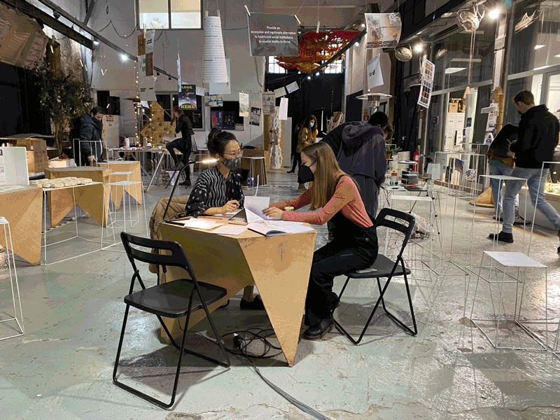

There’s not a moment in our daily lives where we don’t use a tool to help us achieve a task.
Each of these tools have been designed and created by somebody(s) and carries with it a series of design decisions, intent, and bias.
These design decisions embed themselves into our lives through the use of the object, and influnece our own decisions and behaviors in ways.
In the way we "use" tools, our tools also "use" us.
The design of the tool; its shape, material, weight, mechanics, etc., shape our experience around using it.
Starting from our thoughts and anticipations, the emotions we feel in anticipation of approaching the tool,
To
In this exercise, I invited the participants to imagine and respond to the following questions regarding tools:
Draw a tool you enjoy using and write what you use it for
Imagine and draw an alternate way to use this tool
Imagine and draw this tool merged with your physical body
Redesign this tool for a 4yr old and/or a 90yr old person

With each of these questions, I wanted to challenge the participants imagination to reach further into scenarios that they are not used to (stretch their imagination). In order to do this, I started with a very simple tool for the participant to feel comfortable and activate their thinking around one simple and common object. Then I had them imagine using it for an alternate purpose (literal or abstract). Then more abstract in imagining this tool merged with a part of their bodies. Finally, having imagined all the above scenarios, how can this tool be redesigned for people in the extreme ends of the life cycle (old and young).
The outcomes and conversations around the results of the questionnaire were surprising and interesting. There were also many commonalities in the outcomes, like many people chose a hand-held tool or a pen/pencil as their tool. Possibly this was the most common or easiest tool to think of at the moment since they were using one to fill out the form. Also, we use our hands most commonly/widely to operate in the world. This reflection was also apparent in question #3, where the tool was mostly merged with the hand or the arm. Only one participant used a non-physical object as a tool: dreams. And for the final questions, many results modified the tool to be larger and simpler for both the 4 and 90yr olds.